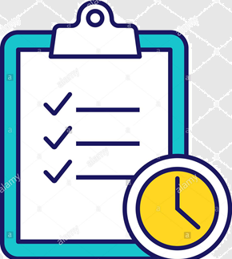

What is the problem?
Currently each company faces a rather complex situation consciously or unconsciously, they cannot be
account for the loss of time and errors that are the result of not having policies, processes and procedures that ensure
the repetitiveness of the tasks that are part of the day to day; Those who come to have such an evolution are submerged in a group of
documents, which is where they are stored, which makes it quite tedious to pass it from employee to employee and even worse to ensure that
each employee perfectly understands their part, so they turn to supervisors to alleviate this problem a little.
Actually the most serious problem is that each company uses a set of systems that are black boxes among themselves, which leads to repetition of tasks
and on the other hand is the dissociation of clear goals and objectives tied to all these procedures, the problem intensifies more and is where some begin to occur
account, when there is change of personnel all the time in training without assurance that everything will be tied to policies that only exist on paper, in turn, this puts into question
the reputation of the company.
What is the solution?
The solution to this problem is not based on the traditional way of creating a solution, as it is well known that each problem has a myriad of solutions and if we make the mistake of embarking on a solution
we would have to rewrite it to adapt it to new solutions that are more optimal, but even worse every time there are changes to the problems of the company which are given in their language there would be a
impedance between the language of the solution and the language of the problem. For this reason the problem is covered by first expressing exactly what the problem is in the language of the problem, creating the semantic
of the problem, in this way all the actors, including the computer, will be able to understand perfectly the definition of what is created and will be able to be active entities to suggest changes that grammatically speaking are not
compatible with the problem.
The approach with which to face this reality begins by first understanding the current systems used in the company, whether manual or digital, the understanding of them leads
to a modeling of them. As each company uses applications to help in their work and which are part of the established processes, the next step is to automate the interaction of
them either to execute them dynamically or to monitor that they have been executed as stipulated. This integration with the existing systems is done in a semantic way, removing the black box function
that these APPs currently have and give a semantic sense to the problem.
To support the execution in accordance with the policies, processes and procedures of each company, a set of solutions has been created, but these hide their interface
behind a semantic environment to ensure that each of them is replaceable and there is no dependence on any particular solution; the solution is the one that adapts to the problem not the problem
to the solution.
-
a3P Modeling
-
It allows the modeling of the policies, processes and procedures as they are defined without being tied to any solution, the goal of this tool is
translate exactly each policy, process and procedures that are contemplated in the company. If some companies have not experience in this regard, the system has access to a database
of shared knowledge of the optional or legally required standards according to the industry.
-
a3P Monitoring and Tracking
-
After defining the policies, processes and procedures, we need a way to know
how its execution is going at all times and a way to create alerts when procedures are done or not, that they go against our policies and could affect the company. A set of tools allow
being able to visualize the execution of each process in the company. Baseline is used to detect anomalies in correct operation.
-
a3P Worfkow and Protocols
-
Sometimes the procedures that we must follow are not isolated actions, but depend on
certain decisions or actions of others to be executed or even external systems, for those situations
You have tools that allow you to define the flow of these relationships. Some of those can become protocols
that specify who an when each should be executed.
-
a3P Simulation and Automation
-
When we have to use APPs within our processes this tool allows me to monitor
the order of steps within the interface and suggest me if I am doing something wrong or they can be executed
those automatic steps making the tool participate in the company's processes (one more employee). With all
this stored intelligence the system can create simulation environments to train employees without affecting execution
of the day to day of the company and also detect which ones need training and in which areas.
-
a3P Rerporting and Dashboard
-
The system allows you to view summarized data on the operation of policies, processes and procedures;
at the same time it allows to visualize the progress with respect to the goals and objectives. The creation of a question and answer system is allowed
that serve as the basis for the automatic creation of operational and administrative dashboards.
-
a3P What If?
-
It is natural that over the years companies introduce changes, to support this natural evolution the system has
a casual inference engine to be able to measure the impact of any change in policies, processes and procedures. The system can even
suggest changes that in other scenarios have proven better results.
-
a3P Agile Task
-

To make operations more efficient, there is a task management system that allows depersonalization of the assignment,
verification and reporting of the tasks, being able to convert the entire activity of the company into one dynamic task system
and a system that prioritizes those that are most beneficial and least harmful for it. At the same time with tools like
Collaboration allows full integration of all staff.